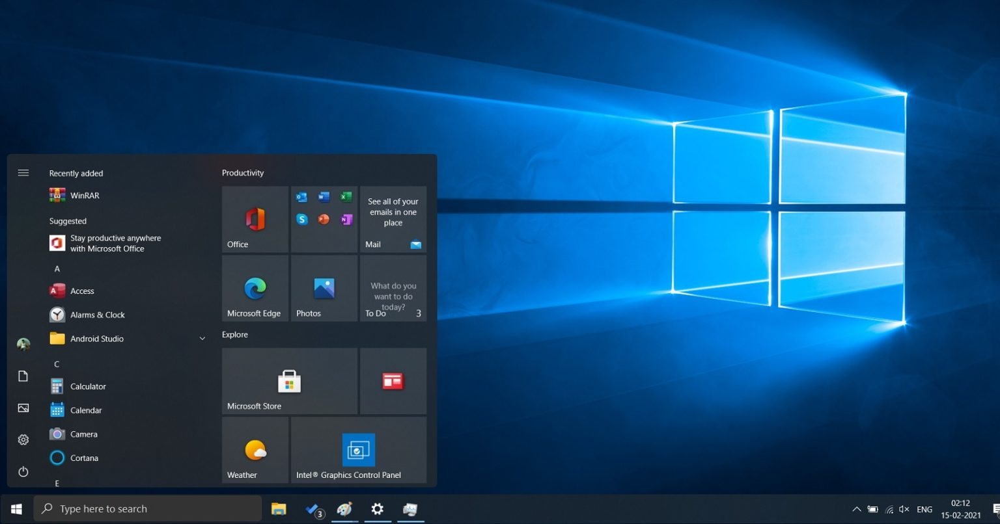

Para abrir um programa, você clica ou toca no ícone correspondente na área de trabalho ou no menu de aplicativos. O que acontece a partir daqui é mágico e, ao mesmo tempo, muito técnico. O sistema operacional entra em ação e carrega o programa na memória RAM do computador. Essa é uma etapa crucial, pois permite que o programa seja executado e que você possa interagir com ele.
Uma vez que o programa está carregado na memória, você está pronto para mergulhar em suas funcionalidades. Isso significa que você pode usar o programa escolhido para realizar tarefas específicas. Seja navegando na web, criando documentos, jogando jogos ou executando qualquer outra função que o programa oferece, você está no controle. Lembre-se de que os detalhes específicos podem variar dependendo do sistema
